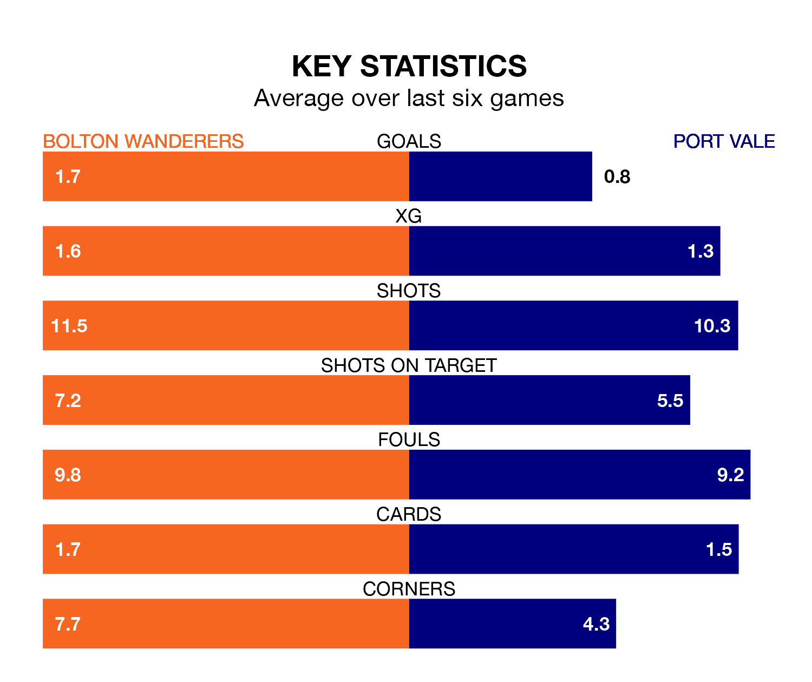

Relegation candidates Port Vale face a challenge away against high-flying Bolton Wanderers at the University of Bolton Stadium on Saturday.
Port Vale are 22nd in the EFL League One table, and have picked up 10 wins and 10 draws in their 44 games to date.
Bolton, meanwhile, are third in the standings with 83 points, having won 24 and drawn 11, and are 11 points behind table-toppers Portsmouth.
With 81 goals in 44 games so far this season, Bolton are the league's second-highest scorers with 1.8 goals per game. And they are conceding fewer than average, letting in 48 goals at a rate of 1.1 per game.
Vale, meanwhile, are below average scorers, with 0.9 goals per game, compared to a league average of 1.3. They have conceded 1.6 goals per game.
In the last 10 years, Bolton and Vale have played each other on nine occasions. Bolton won seven of them, Vale one, and they drew once.
On average, Bolton scored 1.9 goals and the Valiants 1.1 in those matches.
Their last meeting was on December 5, when Bolton won 2-0 at home.
Wanderers are in mixed form in EFL League One, with two wins and three draws from their last six games.
With a win and a draw over that period, the Valiants's form is worse – they have taken four points from 18, compared to the hosts' nine.
With Nathan Baxter between the sticks, Bolton can rely on one of the league's safest pair of hands. He has kept 13 clean sheets in his 31 appearances this season in EFL League One.
In the away side's net, Connor Ripley has 11 clean sheets in 44 games. He has conceded a goal every 62 minutes, 60% more often than the 100 minutes between goals for Baxter.
Bolton's last match was on Tuesday, a 2-2 draw against Shrewsbury Town, with Cameron Jerome and Paris Maghoma getting the goals for Bolton.
Vale lost 2-1 against Wycombe Wanderers last time out, also on Tuesday, with Ethan Chislett on the scoresheet.
Saturday's match will be refereed by Charles Breakspear, who has taken charge of 17 EFL League One games so far this season, issuing six red cards and booking 93 players. He has awarded eight penalties.
The last Bolton game Breakspear refereed was a 3-2 home win against Leyton Orient on December 23. He is yet to oversee a match featuring Vale this season.
Updated: 15:40 (UTC), 18/04/24